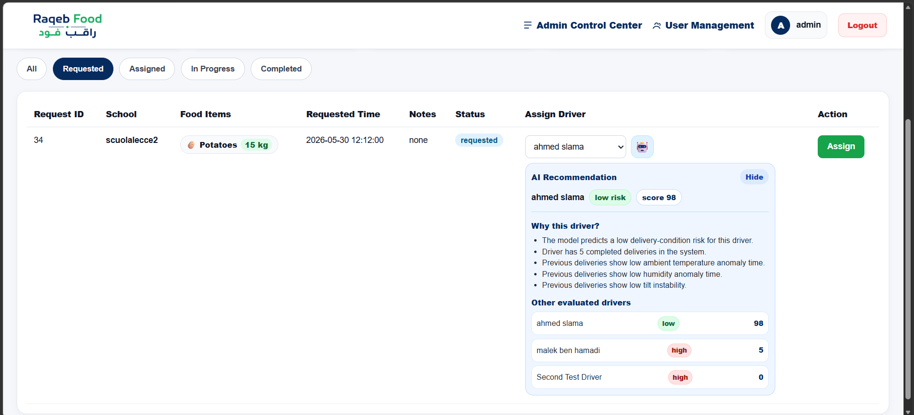
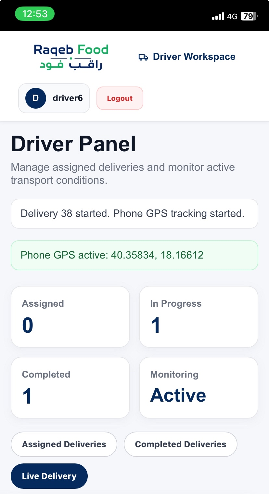
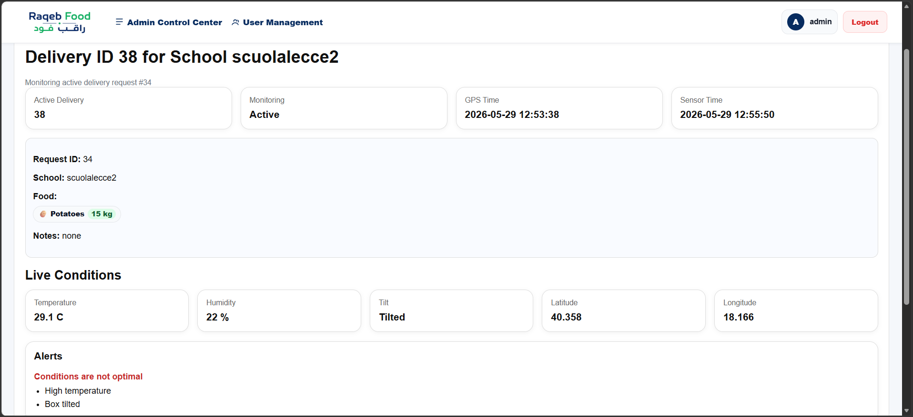
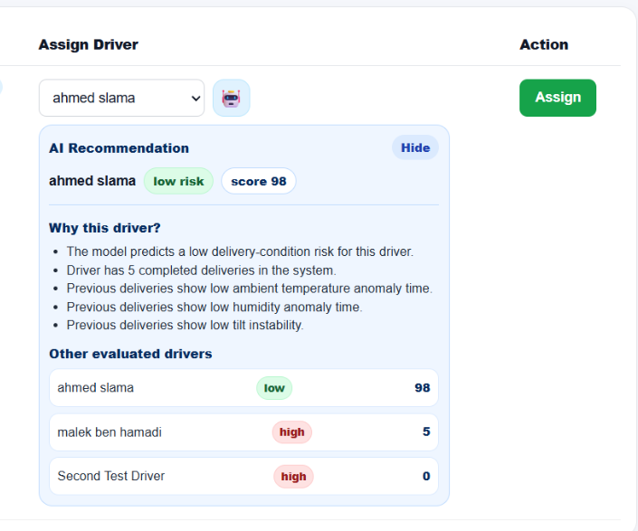
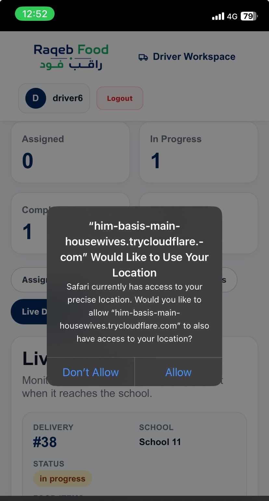

Condition loss can happen silently
Food deliveries for schools can be affected by temperature, humidity, unstable handling or missing traceability. Without monitoring, problems may only be discovered after the delivery is complete.
University of Salento · Internet of Things Exam Project
IoT and AI system for intelligent school food delivery monitoring
A Raspberry Pi and React-based system that monitors food delivery conditions, tracks driver GPS from the phone browser, and supports administrators with AI-assisted driver recommendation.
Project Overview
School meal transportation needs more than basic logistics. Raqeb Food combines IoT sensors, GPS tracking, role-based dashboards, delivery workflow management and AI recommendation to make each delivery more visible and controlled.
Food deliveries for schools can be affected by temperature, humidity, unstable handling or missing traceability. Without monitoring, problems may only be discovered after the delivery is complete.
Raqeb Food links school requests, admin assignment, driver workflow, live sensor monitoring and delivery reports inside one prototype system designed for real-world IoT evaluation.
Temperature, humidity and tilt data are collected from the delivery box through the Raspberry Pi backend.
The driver browser sends live coordinates using the Geolocation API after delivery start.
A Decision Tree predicts delivery-condition risk and helps rank available drivers for the request.
Important monitoring events are saved in the database and can be reviewed after completion.
System Architecture
The system connects a React dashboard, a Flask API running on Raspberry Pi, SQLite storage, physical sensors, phone GPS and an AI module for recommendation.
System logic
The React dashboard communicates with the Flask backend running on the Raspberry Pi. The backend receives sensor data, receives phone GPS coordinates, stores meaningful monitoring records in SQLite, and uses the AI module to support driver assignment.
Role-based Dashboards
Each user role has a focused dashboard: the school creates requests, the administrator assigns and monitors deliveries, and the driver executes the delivery from the phone.
Admin Dashboard

School Dashboard

Driver Dashboard

Live Monitoring
The system monitors live data during active deliveries and stores meaningful event-based records such as sensor changes, tilt events, alerts and delivery start records.
Tracks box temperature and detects high-temperature situations.
Monitors humidity to protect sensitive food during transport.
Detects unstable handling or box movement using the KY-017 tilt module.
Receives driver location from the phone browser during the active delivery.
Shows condition alerts when temperature, humidity or tilt becomes problematic.

AI Driver Recommendation
The AI module recommends the most suitable available driver for a request by combining request context, food sensitivity and driver monitoring history. A Decision Tree Classifier predicts the delivery-condition risk as low, medium or high. The backend then converts the prediction into a suitability score and ranks the available drivers.

Phone GPS Tracking
The driver panel is designed as a mobile workspace for managing assigned deliveries. From this interface, the driver can see the current delivery status, start an assigned delivery, follow the live monitoring state, and complete the delivery once the transport is finished.
Location permission
The driver phone asks for location permission when the delivery starts. During local testing, the Cloudflare Tunnel HTTPS URL allows the browser to use precise location tracking.

Demo Flow
The prototype demonstration follows the full path from a school request to AI-assisted assignment, live monitoring and final reporting.
Technology Stack
The project combines web development, embedded IoT, backend APIs, local storage, machine learning and deployment tools.
Components & Repositories
The backend contains the Raspberry Pi, Flask, IoT, database and AI logic. The frontend contains the React dashboards for the three roles.
Flask API, Raspberry Pi monitoring, SQLite database, authentication, delivery workflow and AI recommendation.
Open Backend RepoReact role-based interface for admins, schools and drivers, including live monitoring and GPS workflow.
Open Frontend RepoStatic showcase website for presenting the project structure, demo flow, components and future work.
To be addedLimitations & Future Work
The current AI dataset is synthetic/prototype-based and can later be replaced by real deployment data.
A production deployment should use HTTPS hosting for reliable browser-based GPS tracking.
A live map could be added to visualize the delivery route and current driver position.
Additional sensors could improve monitoring accuracy and food safety analysis.
Future models could use more real examples and more advanced recommendation strategies.
Route tracking could be improved with richer historical GPS traces and reports.